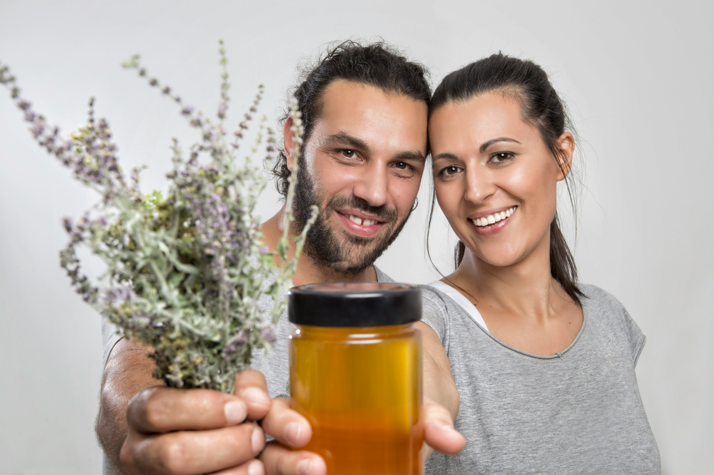

Actualités de la ruche
Récolte de printemps réussie !
Publié le 15 mai 2024
Nos abeilles ont profité d’une météo idéale pour produire un
miel d’acacia exceptionnel cette année. La floraison abondante
et le travail minutieux de nos colonies ont permis une récolte
généreuse, à la fois en quantité et en qualité. Merci à tous
pour votre soutien et votre fidélité !
Détail de l’actualité

Marché fermier ce dimanche
Publié le 10 mai 2024
Retrouvez-nous ce dimanche au marché fermier de la ville ! Nous
vous proposerons une dégustation de nos miels, pollen, gelée
royale et autres produits de la ruche. Venez échanger avec nous,
découvrir nos nouveautés et profiter de conseils personnalisés
sur l’apiculture et la dégustation du miel. Le marché se tiendra
de 8h à 13h sur la place principale. Nous espérons vous y voir
nombreux !
Détail de l’actualité

Conseils pour protéger les abeilles
Publié le 2 mai 2024
Les abeilles jouent un rôle essentiel dans la pollinisation et
la biodiversité. Voici quelques gestes simples pour les aider :
planter des fleurs mellifères, éviter les pesticides, installer
un abreuvoir, et sensibiliser votre entourage à leur protection.
Ensemble, nous pouvons agir pour préserver les pollinisateurs et
garantir la richesse de notre environnement. Merci pour votre
engagement !
Détail de l’actualité